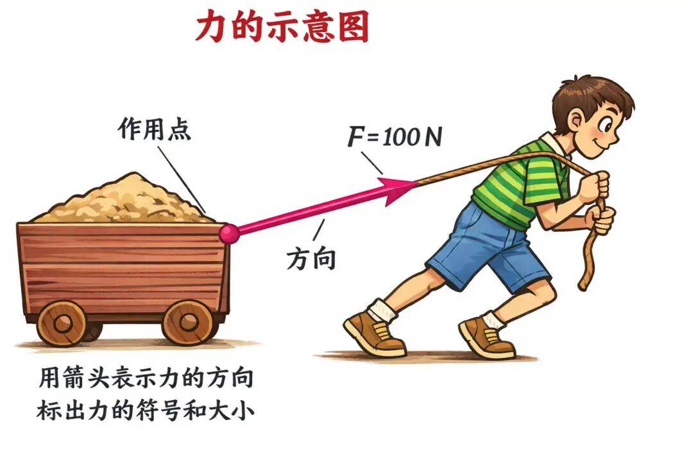
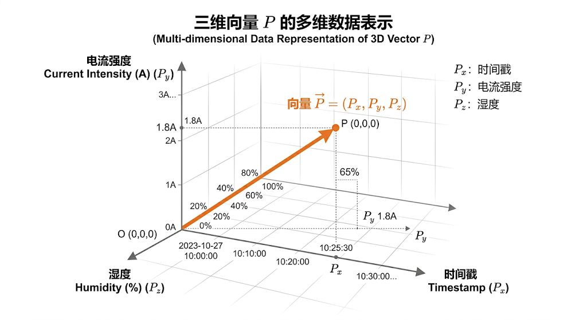
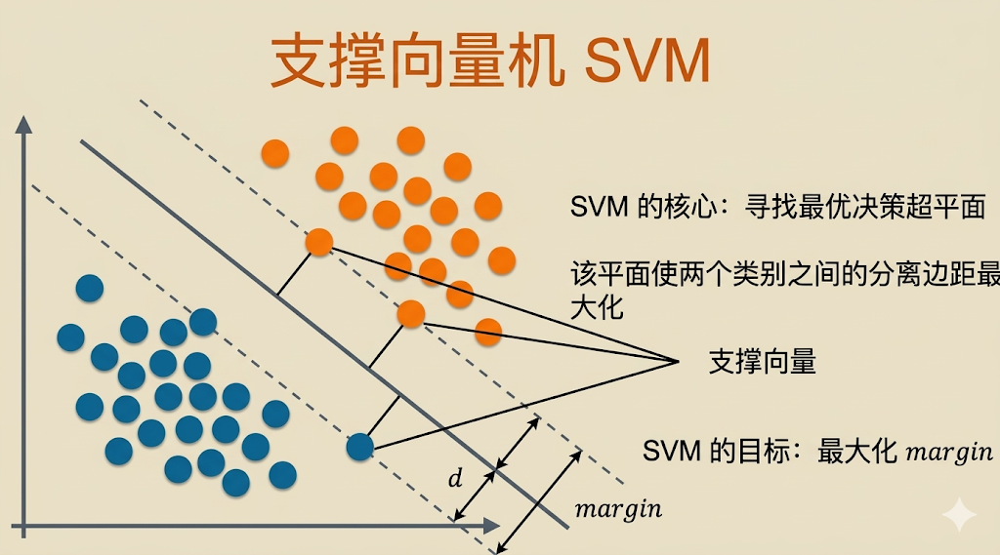
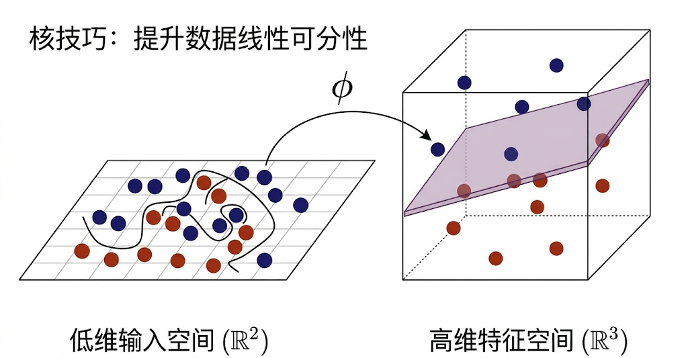
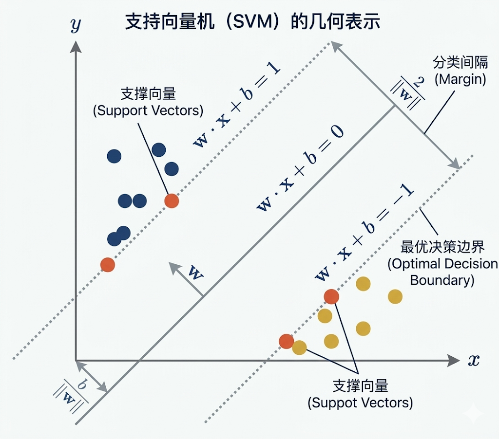
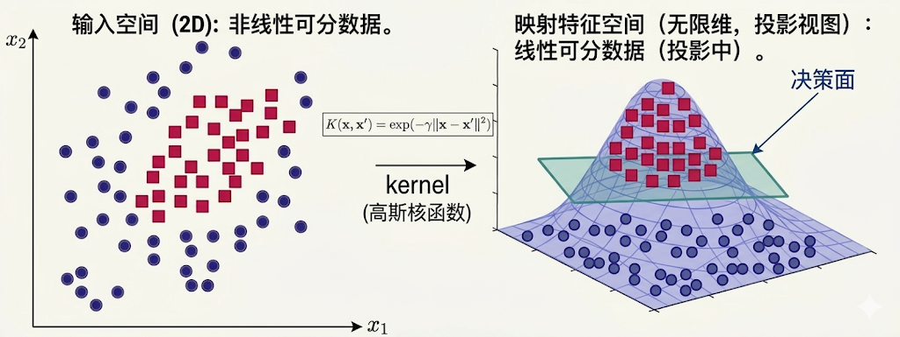
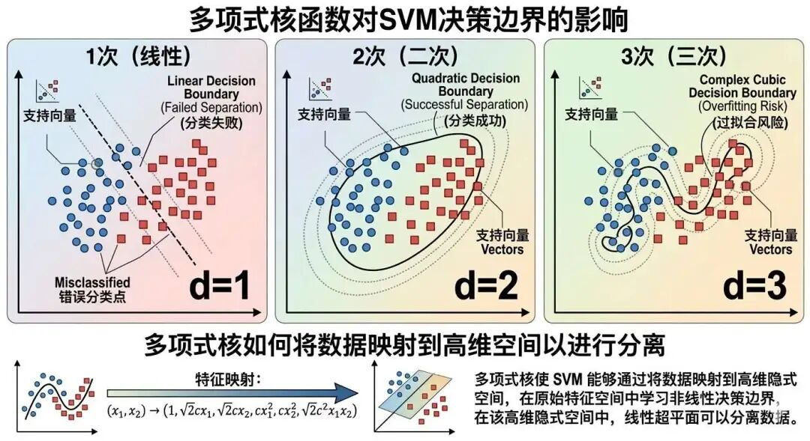
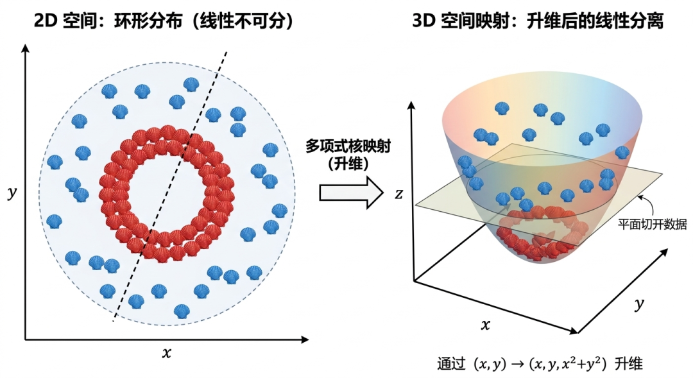

支持向量机
一个文明不能判断另一个文明是善文明还是恶文明——《三体》黑暗森林法则
这一课我们来学习一种新的分类算法：支持向量机，它的英文名叫做 SVM，支持向量机是一种常用于分类的算法，不过它也可以用于回归和异常检测场景。
要理解什么是支持向量机，我们要知道什么是向量。在物理学中，向量通常可以理解为“既有大小又有方向的量”，比如力，就是既有大小还有方向。
注：关于向量，我们在《第6讲：机器学习核心思想（一）万物皆可向量》有关详细论述。

没有方向只有数量的叫做标量，比如“温度”、“质量”。
除了“力”是向量，其实万物皆可向量，无论是自然现象（电闪雷鸣）、社会行为（如经济指标），还是虚拟数据（如像素矩阵），均可通过向量进行建模，这要怎么理解呢？
我们就以电闪雷鸣为例，比如一次电闪雷鸣的过程，我们可以提取其中的一些关键特征，例如时间戳、电流强度、湿度，那么单次雷电事件就可以表示为一个特征向量：（时间戳，电流强度，湿度）。
如果要提取更多特征，其实可以表示为：（时间戳、纬度、经度、电流强度、持续时间、温度、湿度）
看到这里你可能会说，这些不还是标量吗？别急，在机器学习里，一个样本往往就是由多个标量特征按顺序组合起来形成的“特征向量”。
也就是说，单个特征可以是标量，但多个特征组合在一起之后，就可以构成一个向量。
这跟我们之前学习逻辑回归预测成绩时候，输入的多个特征（学习时长、作业完成率、出勤率、期末成绩）是一样的道理，它们也是联合组成了特征向量。

因为三个轴 x、y、z 都是有方向的，向量 P 自然也是一个有方向的向量，其中 $P_x$ 表示时间戳、$P_y$ 表示电流强度、$P_z$ 表示湿度。
通过上面这个示例，我们发现没有什么不能向量化的，只要可以用数值表示，都是可以放到向量空间中去。
在正式讲解 SVM 之前，我再通过一幅图先给大家建立一个对于支持向量机的宏观概念：

请看上图的沙滩（二维直角坐标系），其中散落了两堆点，一堆红点，一堆蓝点。红点我们称之为猫脚印，绿点我们称之为狗脚印，现在需要找到一条宽宽的“马路”，这条马路的中线就是决策边界，马路的两边上面必须没有任何脚印（数据点），而离马路两边最近的点就是支持向量。
然后现在我们针对里面的关键概念进行解析：
1. 超平面（Hyperplane）
在上图二维空间的情况下是一条直线，表达式方程为 $w_1*x_1 + w_2*x_2 + b = 0$。 它将数据分为两类，如猫（左侧）和狗（右侧）。
在上图的沙滩场景中可能存在着多条分隔线，但SVM 会在所有能够正确分开两类样本的分隔线中，通过带约束的优化，选择间隔最大的一条。
2. 间隔（Margin）
间隔指的是超平面到最近样本点的距离。SVM的目标就是要最大化这个间隔，以提高分类的鲁棒性，也就是说要尽量使得“泾渭分明”。
3. 支持向量的作用
假设所有猫脚印中离超平面（直线）最近的脚印点是（1,1），所有狗脚印中离超平面（直线）最近的狗脚印点是（3,3）。这两个点就是支持向量，直接决定了分界线的位置和间隔大小。当然，在真实数据中，支持向量通常不止两个，这里只是为了方便理解，先举一个最简单的例子。
4. 非线性问题与核技巧（Kernel Trick）
如果脚印分布呈环形（猫在内圈，狗在外圈），无法用直线分开，如果脚印是下面这个样子的，要怎么解决？

有一种解决方案是通过更复杂的函数，比如核函数（如高斯核）将数据映射到更高维的特征空间，或者更准确地说，是直接计算它们在高维特征空间中的内积，从而间接完成升维后的分割，最终也能达到分割的目的。
线性可分的SVM（二分类）
这里有一个特别容易混淆的点，要先说清楚：“二分类 / 多分类”说的是类别数量，“线性可分 / 非线性可分”说的是数据能不能用一条直线（或一个超平面）分开。
SVM 最经典的形式是二分类模型。对于二分类问题，如果数据可以直接用一条直线分开，那么这就是线性可分的 SVM；如果不能直接分开，就需要借助核函数去处理非线性问题。
至于多分类问题，通常不是靠“核函数自动变成多分类”，而是通过 OvR、OvO 等策略，把多分类拆成多个二分类问题。
我们先来讲解第一种线性可分的支持向量机，我们用一种很轻松的方式来详细说明：
想象你在沙滩上画线分开两种贝壳，SVM的目标是画一条最宽的隔离带，让两边的贝壳尽可能远离这条线。
这条线就是超平面，而隔离带的宽度叫做间隔。
整体思路
SVM 的求解过程就像在沙滩上画一条最宽安全线，通过调整线的倾斜度（优化权重）和寻找最终贴近边界的关键贝壳（支持向量），实现既准确又鲁棒的分类。
这一过程结合了几何直觉与优化理论，为后续处理复杂数据（如非线性分类）奠定了基础。
要实现这样一条最宽的安全线，有以下三个关键点：
（1）这条线必须完美分开两类贝壳，即满足线性可分。
（2）最宽隔离带能防止新贝壳掉进错误区域，即泛化能力强。
（3）支持向量就是紧贴隔离带边界的贝壳，它们的位置决定了隔离带的方向和宽度
模型结构
接下来系统的用数学语言来说说模型结构，为后续损失函数的讲解作铺垫。线性可分的支持向量机是由超平面、间隔、支持向量构成的。
1、超平面（分界线）
假设二维平面上有两类点，红色和蓝色，则超平面方程为： $w_1*x_1 + w_2*x_2 + b = 0$，这个方程是优化损失函数的出发点。

这三条线，构成了一条“马路”：
（1）上沿：$w\cdot x + b = 1$
（2）中线：$w\cdot x + b = 0$
（3）下沿：$w\cdot x + b = -1$
“间隔”就是上沿到下沿的垂直距离。
我们用第1步的距离公式：
（1）上沿 $w\cdot x + b = 1$ 到中线 0 的距离：
$\dfrac{|1|}{\|w\|} = \dfrac{1}{\|w\|}$
（2）下沿 $w\cdot x + b = -1$ 到中线 0 的距离：
$\dfrac{|-1|}{\|w\|} = \dfrac{1}{\|w\|}$
（3）总间隔宽度 = 上边距离 + 下边距离
间隔宽度 = $\dfrac{1}{\|w\|} + \dfrac{1}{\|w\|} = \boldsymbol{\dfrac{2}{\|w\|}}$
$\|w\|$ 是什么？
表示：$w$ 的长度 / $w$ 的模
2、间隔（马路宽度）
分界线到最近贝壳的垂直距离。间隔越宽，分类的容错性越好。数学上，间隔宽度为 $\frac{2}{\|w\|}$ ，因此最大化间隔等价于最小化 $|w|$，而在实际优化中，通常写成最小化 $\frac{1}{2}|w|^2$，这样更方便求导和求解。

3、支撑向量
支持向量指的是紧贴分界线两侧的数据点，它们是决定分界线位置的核心样本。更准确地说，最终直接决定超平面位置和方向的是这些支持向量；那些远离边界、对应拉格朗日乘子为 0 的样本，不会直接出现在最终的决策函数中。
损失函数/目标函数
损失函数的优化离不开超平面，通过数学方程式变形，可推导出损失优化的目标函数等价于最小化 $\frac{1}{2}*(w_1 ^2 + w_2 ^2)$，其中 $w_1$ 和 $w_2$ 是分割线的倾斜程度。
- 如果分界线太陡峭，即 $w_1^2 + w_2^2$ 过大，马路会变窄，容易误判贝壳位置。
- 如果分界线平缓， 即 $w_1^2 + w_2^2$ 过小，马路会更宽，容错率更高。
为使得马路越宽越好，最小化 $\frac{1}{2}(w_1^2 + w_2^2)$ 的同时需满足：
式（1）所有红色点满足 $w_1*x_1 + w_2*x_2 + b > 1$
式（2）所有蓝色点满足 $w_1*x_1 + w_2*x_2 + b ≤ -1$
如果把两类样本统一写法，则可以合并成一条约束：
$$ \boldsymbol{y_i(w \cdot x_i + b) \ge 1} $$这种损失的优化的目标还是第一次见，相当于“既要又要”，这种情况下优化的难度就很大了，实际上不太可能做到两者都“最大化”的满足，只能平衡一下，尽可能的满足。
那要怎么平衡呢？看看下面这个公式：
$$ L = \text{目标} - \lambda \times \text{限制条件} $$其中“目标”代表了“最小化 $\frac{1}{2}(w_1^2 + w_2^2)$”，“限制条件”代表了满足“式(1)和式(2)”，而 $\lambda$ 是一个系数，也称为拉格朗日乘子，整个乘法就是拉格朗日乘子法。
这样原本带约束的问题（“必须在约束条件里找最佳点”）被变成了无约束问题（“全范围随便找”），那么就可以用求导等标准数学工具求解了，具体来说：
1、引入拉格朗日乘子，分配“优先级”
每个样本都引入一个拉格朗日乘子，用于代表该样本的优先级，然后将原始的目标函数和约束条件融入到新的 $L$ 函数：$L(w, b, α) = (1/2)*||w||² - Σα_i [y_i (w·x_i + b) - 1]$
注释版：
$$ \underbrace{L(w, b, \alpha)}_{\text{SVM 拉格朗日函数}} = \underbrace{\frac{1}{2}\|w\|^2}_{\text{权重正则项}} - \underbrace{\sum_{i} \alpha_i}_{\text{拉格朗日乘子λ}} \underbrace{\Big[ y_i (w\cdot x_i + b) - 1 \Big]}_{\text{两个分类间隔约束，式1和式2}} $$$Σα_i [y_i (w·x_i + b) - 1]$ ：代表对约束条件的惩罚项。如果某个样本违反了约束（即上面两个约束的统一写法 $y_i (w·x_i + b) < 1$ ），这一项会变为正数，由于前面是负号，会导致整个函数值增大，这是我们不希望看到的。拉格朗日乘子 $α_i$ 的大小决定了我们对这个样本违反约束的“在意程度”。
2、转化为对偶问题 - 聚焦关键样本
直接求解上述关于 $w$ 和 $b$ 的原始问题比较复杂。SVM采用了一个巧妙的策略——求解其对偶问题。
什么是对偶问题？你可以这么理解：
1）不直接求“线在哪”，先求每个苹果的「重要分数 $α$」，分数高 = 这个苹果很关键，分数低 = 这个苹果无所谓。
2）算出所有 $α$ 以后，再反推出分界线：
$$ 分界线 = 所有关键苹果 × 它们的重要度 加起来 $$这就叫原始问题 → 对偶问题，本质就是：难的题不做，换一条简单的路做。转到一个更容易处理的等价问题上去解。
具体这通过两步实现：
第一步：固定 拉格朗日乘子α，最小化 L 关于 w 和 b：
我们首先将拉格朗日乘子 $α_i$ 视为常数，找到能使 $L(w, b, α)$ 最小的 $w$ 和 $b$。通过求偏导并令其为零，我们可以得到两个关键关系：
$$ w = Σα_i y_i x_i， Σα_i y_i = 0 $$第一个关系式至关重要！它告诉我们，最优的权重向量 $w$（即分界线的方向）是所有样本的线性组合。每个样本 $x_i$ 对 w 的贡献程度，由其类别 $y_i$ 和对应的拉格朗日乘子 $α_i$ 共同决定。
第二步：将关系式代回，得到对偶问题：
将 $w = Σα_i y_i x_i$ 代回拉格朗日函数，原始的优化问题就转化为一个**只关于 $α_i$ 的最大化问题**，这样就能求出重要分数 $α_i$ ：
$$ 最大化：Σα_i - (1/2) ΣΣ α_i α_j y_i y_j (x_i · x_j) $$ $$ 约束条件：α_i ≥ 0 且 Σα_i y_i = 0 $$3、KKT条件与支持向量—最终求解
求解上述对偶问题后，我们就得到一组最优的 $α_i$，离找到最终的权重只剩一步之遥了。
什么是KKT？KKT，就是在「有各种规则限制」的问题里，用来判断：你找到的答案，是不是「最优解」的一套验收标准
更准确地说，KKT 不是“额外拿来凑的一个工具”，而是约束优化问题在最优解处需要满足的一组条件。借助它，我们就能判断哪些样本真正成为支持向量。
在 SVM 中，一个非常关键的 KKT 条件是：
$$ α_i* [y_i (w·x_i + b) - 1] = 0 $$**情况一：$α_i = 0$**
移项，此时 $y_i (w·x_i + b) - 1$ 可以为任何非负数，这意味着该样本满足约束且远离分界线（函数间隔 ≥ 1）。
由于 $α_i = 0$，根据 $w = Σα_i y_i x_i$，这些样本对最终权重向量 w 的贡献为零，因此不会影响分界线的位置。它们属于大多数，不属于支持向量。
**情况二：$α_i > 0$**
为了满足等式，必须有 $y_i (w·x_i + b) = 1$。这意味着这些样本点恰好位于最大间隔的边界上。这些点就是支持向量，是决定分界线位置和方向的“关键少数”，属于最终要得到的支持向量。
如果以上推导还是不好理解，我这里给一个好懂的文科生能理解的版本：
算完重要分数 $α$ 以后，用一条验收规则筛一遍：
如果一个苹果的重要分数 $α$ > 0，它就刚好贴在马路边上，那这些贴在马路边的苹果，就是：支持向量。
只有它们：决定马路多宽、决定马路往哪歪、决定分界线在哪。
其他离马路很远的苹果：即重要分数 $α$ = 0，不会直接进入最终分界线的表达式中，因此对最终分类边界不再起决定作用。
非线性的 SVM（多分类）
SVM本质上是二分类模型，但通过策略组合和数学优化可以扩展到多分类场景。
第一种扩展：处理非线性问题。 也就是原来在低维空间中无法线性可分的数据，可以借助核函数，在更高维的特征空间中寻找线性分割面。
第二种扩展：处理多分类问题。 也就是把原本的多分类任务拆成多个二分类任务，再通过策略组合完成最终分类。
所以我们这里只讲解策略组合和核函数。其中，策略组合解决的是“类别太多”的问题，核函数解决的是“边界不是直线”的问题。
策略组合
常见的策略组合有两种，一种是one-vs-rest（OvR），另一种是one-vs-one（OvO）。
One-vs-Rest (OvR)
第一种策略组合是对于有多个类别的多分类问题，就对应训练多个SVM分类器。每个分类器负责区分一个特定的类别与其他所有类别。
在预测阶段，将输入样本分别输入到这 $k$ 个分类器中，选择输出值最大的分类器对应的类别作为最终预测结果，这个很好理解，和我们之前的逻辑回归算法有点相似。
One-vs-One (OvO)
第二种策略组合是针对 $k$ 个类别，则训练 $k*(k-1)/2$ 个SVM分类器，每个分类器只用于判断样本是否属于特定的两个类别。在预测阶段，使用所有训练好的分类器进行预测，然后通过投票机制确定样本的最终类别。
这个就不太好理解了，我举个例子大家就懂了，假如海滩上有红色、蓝色、绿色，三种颜色的贝壳，首先对其进行两两组合，最终的数量可以套上面这个公式 $k*(k-1)/2$ 计算出来，一共有三种组合：
训练阶段：构建所有两两组合的分类器
（1）红 vs 蓝：仅用红色和蓝色贝壳训练一个SVM，忽略绿色贝壳。
（2）红 vs 绿：仅用红色和绿色贝壳训练另一个SVM。
（3）蓝 vs 绿：仅用蓝色和绿色贝壳训练第三个SVM。
每个分类器的目标就在于学习区分两个特定类别的超平面，比如红 vs 蓝分类器的任务是画一条线，让红色贝壳在一边，蓝色在另一边。
预测阶段：新贝壳进入所有分类器判断：
（1）红 vs 蓝分类器：若判断为红色，则红色得1票；否则蓝色得1票。
（2）红 vs 绿分类器：若判断为红色，红色得1票；否则绿色得1票。
（3）蓝 vs 绿分类器：若判断为蓝色，蓝色得1票；否则绿色得1票。
然后统计票数，得票最多的类别为最终预测结果。比如新贝壳经过三个分类器后，红得2票，蓝得0票，绿得1票，则判定为红色。
但是如果出现平票，如红、蓝、绿各1票，则选择距离超平面最远的类别，置信度更高。
什么是置信度？
之前在第十二讲有提及，置信度表示模型对自己答案“有多确定”的自我评分。它通常以 0 到 1 之间的概率值表示。
核函数
然后接下来讲解核函数，核函数主要作用是将低维数据映射到高维空间，解决线性不可分的问题，下面是常见的几种核函数：

1）线性核函数（Linear Kernel）
$$ 公式： K(x, y) = x * y $$就是我们上面讲解的线性可分的情况下：直接在原始空间中画一条直线（或超平面）分隔数据，适合两类数据线性可分的情况。
2） 高斯核函数（RBF，径向基核函数）
$$ 公式： K(x, y) = exp(-r||x - y||^2) $$注释版：
$$ \underbrace{K(x, y)}_{\text{高斯RBF核函数}} = \underbrace{\exp}_{\text{指数运算}} \!\left( -\underbrace{r}_{\text{核宽度参数}} \underbrace{\|x - y\|^2}_{\text{欧式距离平方}} \right) $$
其中参数 **$\gamma$** 控制“钟形曲线”的宽度，值越大边界越复杂。
高斯核函数本质上通过样本之间的距离来衡量相似性：距离越近，相似性越高；距离越远，相似性越低。
因此它特别适合处理边界弯曲、分布复杂的非线性数据，也是实际应用中最常用的核函数之一。
举个例子加深理解：如果贝壳颜色混杂，有红、蓝、绿交错分布，高斯核可以像“魔法镜子”一样，将沙滩映射到高维空间，使得每个颜色区域被平滑的曲面分隔开，这是实际应用中最常用的核函数。
3）多项式核函数（Polynomial Kernel）
$$ 公式： K(x, y) = (r x * y + c)^d $$注释版：
$$ \underbrace{K(x, y)}_{\text{多项式核函数}} = \big( \underbrace{r}_{\text{缩放系数}} \underbrace{x \cdot y}_{\text{向量内积}} + \underbrace{c}_{\text{偏置项}} \big)^{\underbrace{d}_{\text{多项式阶数}}} $$多项式核函数通过多项式变换将数据映射到更高维空间，适合数据具有多项式分布的复杂边界。

举个例子来比喻，若红色和蓝色贝壳呈环形分布（内圈红色，外圈蓝色），多项式核可以通过“升维”将环形分布映射到三维空间，使其被一个平面切开。

4）Sigmoid核函数
$$ 公式： K(x, y) = tanh(r x * y + c) $$注释版：
$$ \underbrace{K(x, y)}_{\text{Sigmoid核函数}} = \underbrace{\tanh}_{\text{双曲正切函数}} \big( \underbrace{r}_{\text{缩放系数}} \underbrace{x \cdot y}_{\text{向量内积}} + \underbrace{c}_{\text{偏置项}} \big) $$$Sigmod$ 核函数实际上是在模拟神经网络的激活函数，它适合某些特殊分布的非线性问题，但效果通常不如高斯核。
同样举个例子来比喻，假设贝壳颜色分布类似“S”形曲线，Sigmoid核会尝试用类似“拉伸”和“压缩”的方式将数据映射到可分的空间。
SVM的核心总结
最后我们来总结一下支持向量机的核心思想：
在线性可分的情况下，通过优化算法找到最“安全”的分界线，避免过拟合，其中支持向量起到关键性的作用，模型仅依赖少量关键样本点，计算效率高；
当线性不可分时，一种方法是将多分类问题转换为二分类问题，另外一种是通过核函数对数据进行升维，处理非线性问题，这种方法扩展性强。